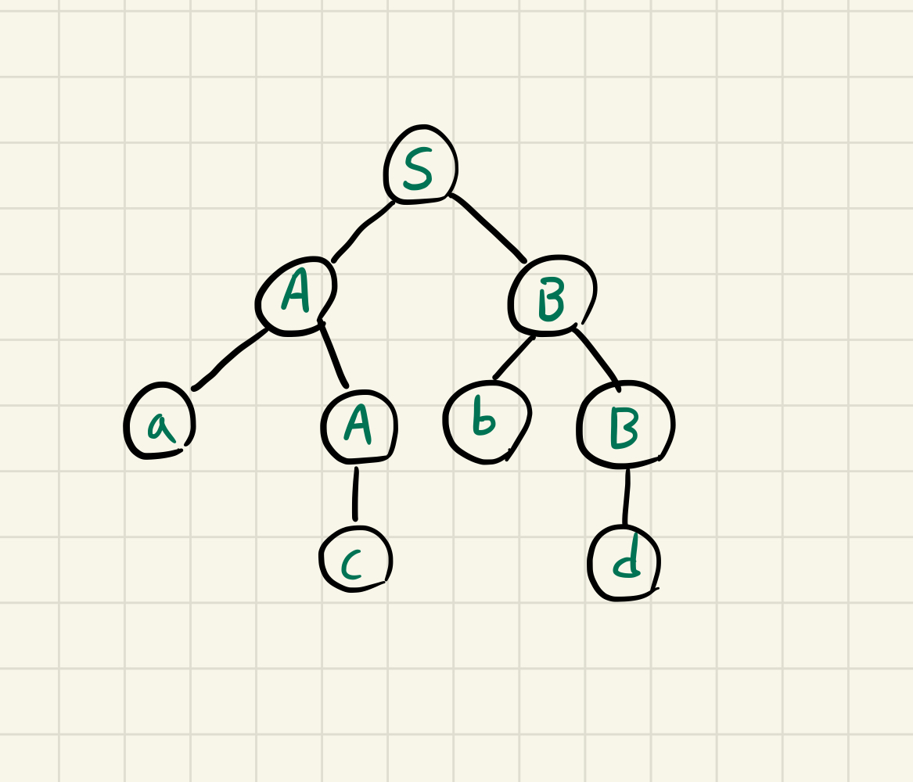
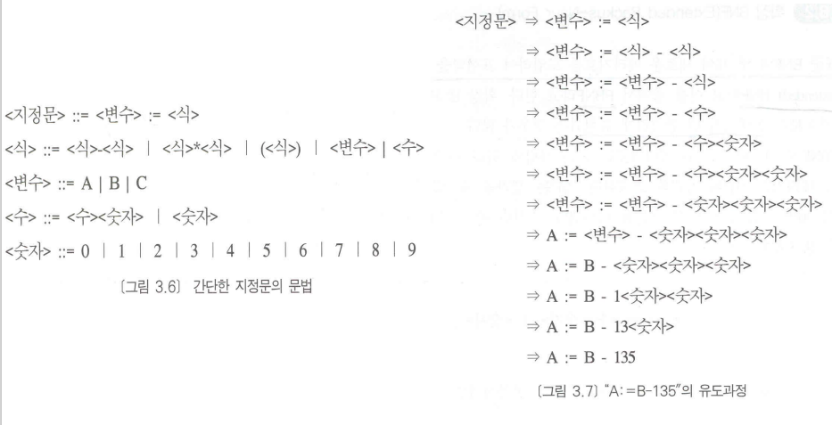
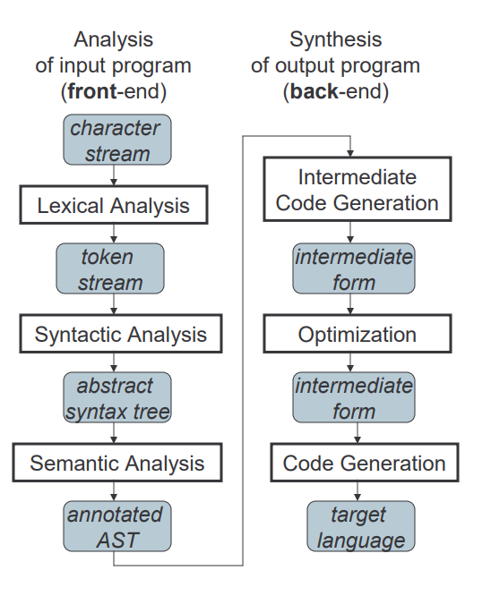
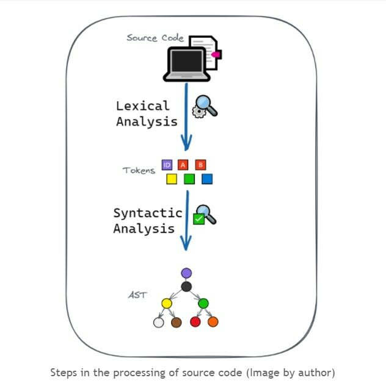
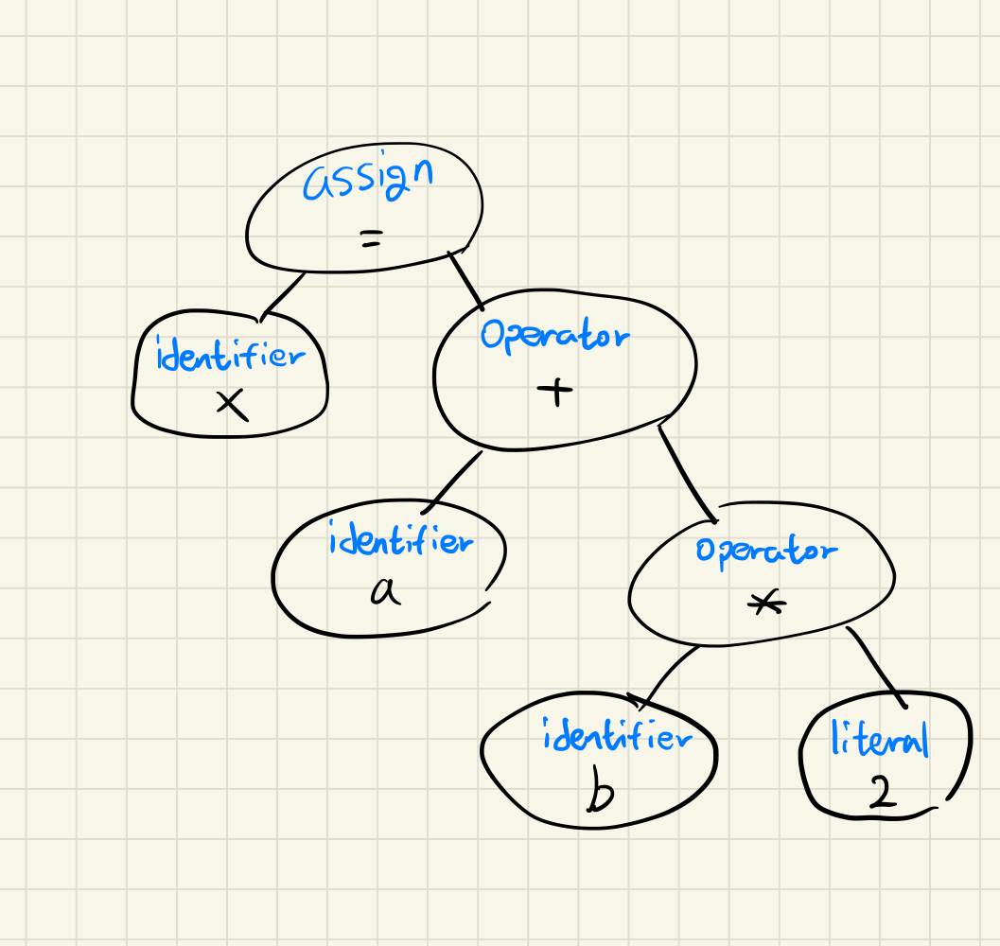
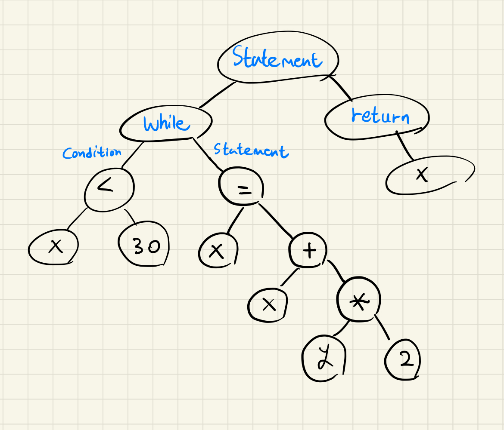

[Javascript] 추상 구문 트리(AST) 알아보기(w. 파스 트리, CFG, BNF)
서론
CS 스터디에서 7월 30일 발표한 추상 구문 트리에 대해 정리한 문서를 블로그에 공유하고자 한다.
AST?
추상 구문 트리(Abstract Syntax Tree, AST)란, 프로그램 또는 코드 조각의 구조를 표현하기 위해 사용되는 자료구조를 말합니다. 이때 트리를 이루는 각 노드들은 코드에서 발생되는 구문을 나타냅니다.
구문이 추상적이다(Abstract) 라는 말의 뜻은, 이 트리가 실제 구문의 모든 세부 사항들을 나타내지는 않고 구조나 내용과 관련된 세부 사항들만 나타낸다는 뜻입니다.
이러한 특징은 구문 트리(또는 파스 트리)라고 불리는 개념과 추상 구문 트리를 구분되게 합니다.
구문 트리(파스 트리)
구문 트리(파스 트리)란, 문맥 자유 문법(Context-Free Grammar, CFG)을 따르는 문자열의 구문 구조를 나타내는 트리로, 유도과정 또는 구문 구조를 보여줍니다.
만약 주어진 표현을 구문 트리로 나타낼 수 있을 경우, 해당 표현은 주어진 BNF에 의해 작성되었다고 할 수 있습니다.
파스 트리는 아래 설명할 추상 구문 트리처럼 어휘 분석과 구문 분석 과정을 통해 생성되며, 이는 생성 규칙을 바탕으로 시작 기호부터 점점 반복적으로 비-터미널 기호들을 치환해나가 궁극적으로 문자열을 유도하는 유도 과정을 그래픽으로 표현한 것으로도 볼 수 있습니다. (그래서 구문 트리를 유도의 역이라고 일컫기도 합니다.)
파스 트리 규칙
- 모든 리프 노드는
터미널이어야 한다. - 모든 내부 노드는
터미널이 아니어야(Non-Terminal)한다. - 트리를
중위순회할 경우, 주어진 문자열을 완성해야 한다.
여기서 터미널이란, 터미널 기호(Terminal Symbol)를 뜻하며 형식 문법(Formal Grammar) 의 일부로 정의된 언어의 기본 기호를 말합니다.
비-터미널 기호(Non-terminal Symbol)의 경우, 생성 규칙(Production Rule)에 따라 터미널 기호로 대체되는 기호들을 말합니다.
예시
다음과 같은 생성 규칙을 갖는 문법이 있다고 가정하겠습니다.
생성 규칙: 규칙의 왼쪽에 정의될 대상이, 오른쪽에 그 대상에 대한 정의가 나타나는 구문 규율
S -> AB
A -> c/aA
B -> d/bB
이때 주어진 입력 문자열이 “acbd"라고 할 경우, 파스 트리는 다음과 같습니다. 
문맥 자유 문법(Context-Free Grammar, CFG)
문맥 자유 문법(CFG)이란, 문맥과 관계 없이 비-터미널 기호에 생성 규칙을 적용할 수 있는 형식 문법을 말합니다.
다르게 말하면, 문법 $G$가 다음과 같다고 할 때,
$$G = (V, T, S, P)$$
V: 변수라고 부르는 객체들의 유한 집합
T : 터미널 기호라 불리는 객체들의 유한 집합
S : 시작 변수(V 중 시작할 때 사용하는 것)
P : 생성 규칙들의 유한집합
모든 생성 규칙이 다음을 만족할 경우 G를 문맥 자유 문법 이라고 합니다.
$$ A \rightarrow x $$
- $A$는
비-터미널 기호, $x$는터미널및(또는)비-터미널문자열(또는 비어있을 수 있음)입니다.
배커스-나우르 표기법(Backus-Naur Form, BNF)
<기호> ::= <표현식>
배커스-나우르 표기법(BNF)이란, 문맥 자유 문법을 나타내기 위해 만들어진 표기법(메타 언어)을 말합니다. 다르게 말하면 한 언어의 구문에 대한 생성 규칙들의 집합이라고 할 수 있습니다.
BNF는 위와 같은 문법을 사용하는데, 여기서 <기호>는 터미널 기호가 될 수 없고 꺾쇠쌍으로 감싸져있으며, 표현식은 터미널 또는 비-터미널 기호로 이뤄진 하나 이상의 시퀀스들로 구성되고 각 시퀀스들은 |로 구분됩니다.
구문적으로 올바른 시퀀스들은 시작 심볼이 하나만 포함되도록 시퀀스를 초기화하고, 이 시작 심볼과 이어지는 심볼 시퀀스들에 파생 규칙들을 적용해야 합니다.
예시

추상 구문 트리

출처: CSE401: Introduction to Compiler Construction - Syntactic Analysis
추상 구문 트리는 컴파일러를 구성하는 프론트엔드(소스 코드를 스캔하고 파싱함) 및 백엔드(아웃풋을 생성함) 중 프론트엔드의 결과물로 만들어지게 됩니다.
또한 앞서 말했듯, 추상 구문 트리는 실제 구문의 모든 세부 사항을 나타내지는 않습니다.
- 예시로 그룹화 괄호는 “
트리 구조“라는 형태로 이미 내포되어 있으므로 별도의 노드로 나타내지 않습니다.- 마찬가지로,
if-condition-then문과 같은 구문 구조는 3개의 가지를 갖는 단일 노드로 표현됩니다.
- 마찬가지로,
그리고 AST는 포함된 요소들의 속성, 애너테이션과 같은 정보를 사용해 소스 코드의 변경 없이 수정 및 개선이 가능하고, 소스 코드의 불필요한 기호(중괄호, 세미콜론 등)들이 포함되지 않는 등의 특징을 지닙니다.
이 때문에 주로 컴파일러가 의미 분석(Semantic Analysis, 선언과 구문이 의미론적으로 정확한지 확인하는 작업으로 각 연산자가 일치하는 피연산자를 갖고 있는지 확인하는 "타입 검사"와 같은 작업을 포함함)을 수행할 때 유용하게 사용됩니다.
생성 과정

출처: Abstract Syntax Tree (AST) - Explained in Plain English - DEV Community
소스 코드로부터 추상 구문 트리를 생성해내기 위해서는 위 그림과 같이 어휘 분석(Lexical Analysis, 또는 스캐너)과 구문 분석(Syntactic Analysis) 과정을 거쳐야합니다.
- 그리고 컴파일러에서 이들을 수행하는 부분을
Parser라고 일컫습니다.
어휘 분석(Lexical Analysis)
어휘 분석기(Lexer 또는 Scanner)가 소스 코드를 한 글자씩 읽으며 문자열을 (의미론 또는 구문론적으로)의미있는 어휘 토큰(코드의 가장 작은 단위)으로 그룹화하게 됩니다.
이러한 토큰은 상수, 연산자, 구두점(중괄호, 세미콜론 등), 키워드(if, while 등)와 같은 범주 중 하나에 속하게 됩니다.
대부분의 어휘 분석은 다음과 같은 단계를 따릅니다.
- 토큰 식별하기(토큰화)
- 입력 텍스트들을 일련의 토큰으로 분할해, 입력 기호들의 고정된 집합을 결정합니다. 이는
문자(letter),숫자(digit),연산자(operator)등을 포함합니다.
- 입력 텍스트들을 일련의 토큰으로 분할해, 입력 기호들의 고정된 집합을 결정합니다. 이는
- 문자열을 토큰에 할당하기
어휘 분석기(Lexer)에 설정된 분류 체계대로 입력 문자들을 인식하고 분류합니다.
- 토큰의 어휘 반환하기
- 어휘는 기본적으로 토큰을 구성하는 하위 문자열 집합에서 가장 작은 단위를 말합니다.
어휘 분석기는 이 어휘를 반환하게 됩니다.
- 어휘는 기본적으로 토큰을 구성하는 하위 문자열 집합에서 가장 작은 단위를 말합니다.
예시
x = a + b * 2;
만약 다음과 같은 표현식을 어휘 분석할 경우, 다음과 같은 토큰 시퀀스를 얻을 수 있습니다.
[(identifier, x), (operator, =), (identifier, a), (operator, +), (identifier, b), (operator, *), (literal, 2), (separator, ;)]
구문 분석(Syntactic Analysis)
파싱(Parsing)이라고도 불리는 이 작업은, 어휘 분석기로부터 전달받은 토큰 스트림을 이것의 문법적 구조를 나타내는 트리 형태의 표현을 생성하게 됩니다.
그리고 위 과정에서 주어진 프로그램이 구문론적으로 정확한지 판단하며, 만약 에러를 찾은 경우 구문 분석기는 진단 메세지를 생성하고 오류를 복구해야 합니다.
구문 분석기, 즉 파서(Parser)는 파스 트리를 구축하는 방향에 따라 크게 탑-다운 파서와 바텀-업 파서로 나뉩니다.
예시
어휘 분석 예시에서 나왔던 표현식을 구문 분석할 경우, 다음과 같은 추상 구문 트리를 얻을 수 있습니다.

종합 예시
while (x < 30) {
x = x + y * 2;
}
return x;
위와 같은 코드가 있다고 할 때, 이를 기반으로 추상 구문 트리를 만들어보겠습니다.
먼저, 어휘 분석을 통해 소스 코드를 어휘 토큰들로 변환합니다.
| 어휘소(Lexeme) | 토큰 구분 |
|---|---|
| while | WHILE |
| x | variable Identifier |
| < | comparison Operator |
| 30 | integer Literal |
| x | variable Identifier |
| = | assignment Operator |
| x | variable Identifier |
| + | addition Operator |
| y | variable Identifier |
| * | multiplication Operator |
| 2 | integer Literal |
| ; | Semicolon |
| return | RETURN |
| x | variable Identifier |
| ; | Semicolon |
이후, 이들을 기반으로 추상 구문 트리를 만들면, 다음과 같습니다.

트리의 간략화를 위해 토큰 구분은 생략했습니다.
이를 자바스크립트 코드로 생성한 AST(편의를 위해 JSON 형태로 변환함)로 표현한다면 다음과 같습니다.
{
"type": "Program",
"start": 0,
"end": 71,
"body": [
{
"type": "FunctionDeclaration",
"start": 0,
"end": 70,
"id": {
"type": "Identifier",
"start": 9,
"end": 13,
"name": "func"
},
"expression": false,
"generator": false,
"async": false,
"params": [],
"body": {
"type": "BlockStatement",
"start": 16,
"end": 70,
"body": [
{
"type": "WhileStatement",
"start": 21,
"end": 57,
"test": {
"type": "BinaryExpression",
"start": 28,
"end": 34,
"left": {
"type": "Identifier",
"start": 28,
"end": 29,
"name": "x"
},
"operator": "<",
"right": {
"type": "Literal",
"start": 32,
"end": 34,
"value": 30,
"raw": "30"
}
},
"body": {
"type": "BlockStatement",
"start": 36,
"end": 57,
"body": [
{
"type": "ExpressionStatement",
"start": 40,
"end": 54,
"expression": {
"type": "AssignmentExpression",
"start": 40,
"end": 53,
"operator": "=",
"left": {
"type": "Identifier",
"start": 40,
"end": 41,
"name": "x"
},
"right": {
"type": "BinaryExpression",
"start": 44,
"end": 53,
"left": {
"type": "Identifier",
"start": 44,
"end": 45,
"name": "x"
},
"operator": "+",
"right": {
"type": "BinaryExpression",
"start": 48,
"end": 53,
"left": {
"type": "Identifier",
"start": 48,
"end": 49,
"name": "y"
},
"operator": "*",
"right": {
"type": "Literal",
"start": 52,
"end": 53,
"value": 2,
"raw": "2"
}
}
}
}
}
]
}
},
{
"type": "ReturnStatement",
"start": 59,
"end": 68,
"argument": {
"type": "Identifier",
"start": 66,
"end": 67,
"name": "x"
}
}
]
}
}
],
"sourceType": "module"
}
AST의 활용 예시
AST는 Java 소스 코드를 분석해 Eclipse IDE의 도구들을 사용하거나, Annotation Processor가 AST를 조작해 애너테이션의 동작을 수행하거나, C/C++ 소스 코드의 내부 표현을 제공하거나(CAST), Python 코드를 정적 분석하는 등 언어를 가리지 않고 다양한 곳에서 사용되고 있습니다.
특히, Javascript에서는 다음과 같은 도구들에서 AST를 사용하고 있습니다.
- Babel
- 최신 자바스크립트 문법을 이전 자바스크립트 버전과 호환시키는 작업인
트랜스파일링을 수행하는데AST 파서(구 Babylon 현 @babel/parser)및생성기(@babel/generator)를 사용합니다.
- 최신 자바스크립트 문법을 이전 자바스크립트 버전과 호환시키는 작업인
- Typescript
- 타입스크립트에서
타입을 체크하고,에러를 검출한 뒤 자바스크립트 코드로 변환하는데 있어 AST 표현을 사용합니다.
- 타입스크립트에서
- ESLint
정적 분석 도구인ESLint는AST(ESTree 포맷을 따르는)를 사용해 코드를 검사하며, 코딩 표준을 지키지 않았거나 에러가 발생할 수 있는 곳을 발견합니다.
- Jest
- 자바스크립트 코드의 단위 테스트, 통합 테스트 등을 수행하는데 사용되는 테스트 프레임워크인
Jest에서 역시AST를 사용해코드를 표현하고테스트를 수행합니다.
- 자바스크립트 코드의 단위 테스트, 통합 테스트 등을 수행하는데 사용되는 테스트 프레임워크인
참고
- Context-free grammar - Wikipedia
- Abstract syntax tree - Wikipedia
- Terminal and nonterminal symbols - Wikipedia
- 구문 트리
- Parsing - Wikipedia
- Parse Tree in Compiler Design - GeeksforGeeks
- Reading 18: Parser Generators (mit.edu)
- Reading 18: Parsers (mit.edu)
- 프로그래밍 언어의 구문 BNF, EBNF, 파.. : 네이버블로그 (naver.com)
- 오토마타 이론 공부 (11) - 파스 트리(P.. : 네이버블로그 (naver.com)
- BNF : Backus Naur Form (aistudy.com)
- 문맥 자유 문법 : Context Free Grammar (aistudy.com)
- 컴파일러 - 제4장 구문 (donga.ac.kr)
- PowerPoint Template (kocw.or.kr)
- 1장 기본적인 사항 (kocw.or.kr)
- 어휘 분석 및 구문 분석
- Programming Language Concepts - 4. LEXICAL AND SYNTAX ANALYSIS (gsu.edu)
- ECS 142: Compilers - Syntactic Analysis (ucdavis.edu)
- Introduction to Syntax Analysis - CSCI4160: Compiler Design and Software Development (mtsu.edu)
- CSE401: Introduction to Compiler Construction - Syntactic Analysis (washington.edu)
- Compiler Design - Syntax Analysis (tutorialspoint.com)
- What Is Lexical Analysis? | Coursera
- Lexical analysis - Wikipedia
- Introduction of Lexical Analysis - GeeksforGeeks
- 추상 구문 트리(AST)
- AST를 이해하는데 유용한 영상